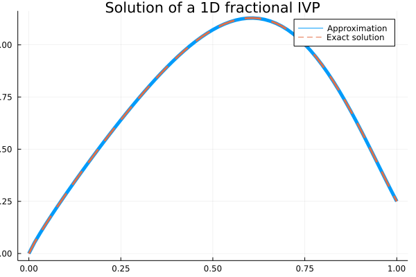
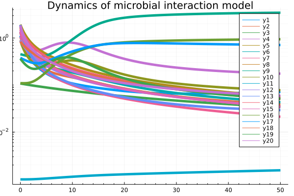

API
Example 1: Fractional nonlinear equation
\[0<\beta\leq1\]
subject to the initial condition
\[y(0)=0\]
The exact solution is
\[y(t)=t^8-3t^{4+\beta/2}+9/4t^\beta\]
julia> using FdeSolverjulia> using Plots, SpecialFunctionsjulia> # Inputs tSpan = [0, 1] # [intial time, final time]2-element Vector{Int64}: 0 1julia> y0 = 0 # initial value0julia> β = 0.9 # order of the derivative0.9julia> # ODE Model par = β0.9julia> F(t, y, par) = (40320 ./ gamma(9 - par) .* t .^ (8 - par) .- 3 .* gamma(5 + par / 2) ./ gamma(5 - par / 2) .* t .^ (4 - par / 2) .+ 9/4 * gamma(par + 1) .+ (3 / 2 .* t .^ (par / 2) .- t .^ 4) .^ 3 .- y .^ (3 / 2))F (generic function with 1 method)julia> ## Numerical solution t, Yapp = FDEsolver(F, tSpan, y0, β, par)([0.0, 0.015625, 0.03125, 0.046875, 0.0625, 0.078125, 0.09375, 0.109375, 0.125, 0.140625 … 0.859375, 0.875, 0.890625, 0.90625, 0.921875, 0.9375, 0.953125, 0.96875, 0.984375, 1.0], [0.0; 0.053286852094795355; … ; 0.30304477536219776; 0.25015568292968743])julia> # Plot plot(t, Yapp, linewidth = 5, title = "Solution of a 1D fractional IVP", xaxis = "Time (t)", yaxis = "y(t)", label = "Approximation")Plot{Plots.GRBackend() n=1}julia> plot!(t, t -> (t.^8 - 3 * t .^ (4 + β / 2) + 9/4 * t.^β), lw = 3, ls = :dash, label = "Exact solution")Plot{Plots.GRBackend() n=2}qt.qpa.xcb: could not connect to display qt.qpa.plugin: Could not load the Qt platform plugin "xcb" in "" even though it was found. This application failed to start because no Qt platform plugin could be initialized. Reinstalling the application may fix this problem. Available platform plugins are: linuxfb, minimal, offscreen, vnc, xcb. Aborted (core dumped) connect: Connection refused GKS: can't connect to GKS socket application GKS: Open failed in routine OPEN_WS GKS: GKS not in proper state. GKS must be either in the state WSOP or WSAC in routine ACTIVATE_WS

Example 2: Lotka-volterra-predator-prey
julia> using FdeSolverjulia> using Plotsjulia> # Inputs tSpan = [0, 25] # [initial time, final time]2-element Vector{Int64}: 0 25julia> y0 = [34, 6] # initial values2-element Vector{Int64}: 34 6julia> β = [0.98, 0.99] # order of derivatives2-element Vector{Float64}: 0.98 0.99julia> par = [0.55, 0.028, 0.84, 0.026] # model parameters4-element Vector{Float64}: 0.55 0.028 0.84 0.026julia> # ODE Model function F(t, y, par) α1 = par[1] # growth rate of the prey population β1 = par[2] # rate of shrinkage relative to the product of the population sizes γ = par[3] # shrinkage rate of the predator population δ = par[4] # growth rate of the predator population as a factor of the product # of the population sizes u = y[1] # population size of the prey species at time t[n] v = y[2] # population size of the predator species at time t[n] F1 = α1 .* u .- β1 .* u .* v F2 = - γ .* v .+ δ .* u .* v [F1, F2] endF (generic function with 1 method)julia> ## Solution t, Yapp = FDEsolver(F, tSpan, y0, β, par)([0.0, 0.015625, 0.03125, 0.046875, 0.0625, 0.078125, 0.09375, 0.109375, 0.125, 0.140625 … 24.859375, 24.875, 24.890625, 24.90625, 24.921875, 24.9375, 24.953125, 24.96875, 24.984375, 25.0], [34.0 6.0; 34.2230819988679 6.004605170244161; … ; 19.462837398735253 26.523585821512793; 19.410684421804234 26.384815951114838])julia> # Plot plot(t, Yapp, linewidth = 5, title = "Solution to LV model with 2 FDEs", xaxis = "Time (t)", yaxis = "y(t)", label = ["Prey" "Predator"])Plot{Plots.GRBackend() n=2}julia> plot!(legendtitle = "Population of")Plot{Plots.GRBackend() n=2}qt.qpa.xcb: could not connect to display qt.qpa.plugin: Could not load the Qt platform plugin "xcb" in "" even though it was found. This application failed to start because no Qt platform plugin could be initialized. Reinstalling the application may fix this problem. Available platform plugins are: linuxfb, minimal, offscreen, vnc, xcb. Aborted (core dumped) connect: Connection refused GKS: can't connect to GKS socket application GKS: Open failed in routine OPEN_WS GKS: GKS not in proper state. GKS must be either in the state WSOP or WSAC in routine ACTIVATE_WS

Example 3: SIR model
One application of using fractional calculus is taking into account effects of memory in modeling including epidemic evolution.
By defining the Jacobian matrix, the user can achieve a faster convergence based on the modified Newton–Raphson method.
julia> using FdeSolverjulia> using Plotsjulia> # Inputs I0 = 0.001 # intial value of infected0.001julia> tSpan = [0, 100] # [intial time, final time]2-element Vector{Int64}: 0 100julia> y0 = [1 - I0, I0, 0] # initial values [S0,I0,R0]3-element Vector{Float64}: 0.999 0.001 0.0julia> α = [1, 1, 1] # order of derivatives3-element Vector{Int64}: 1 1 1julia> h = 0.1 # step size of computation (default = 0.01)0.1julia> par = [0.4, 0.04] # parameters [β, recovery rate]2-element Vector{Float64}: 0.4 0.04julia> ## ODE model function F(t, y, par) # parameters β = par[1] # infection rate γ = par[2] # recovery rate S = y[1] # Susceptible I = y[2] # Infectious R = y[3] # Recovered # System equation dSdt = - β .* S .* I dIdt = β .* S .* I .- γ .* I dRdt = γ .* I return [dSdt, dIdt, dRdt] endF (generic function with 1 method)julia> ## Jacobian of ODE system function JacobF(t, y, par) # parameters β = par[1] # infection rate γ = par[2] # recovery rate S = y[1] # Susceptible I = y[2] # Infectious R = y[3] # Recovered # System equation J11 = - β * I J12 = - β * S J13 = 0 J21 = β * I J22 = β * S - γ J23 = 0 J31 = 0 J32 = γ J33 = 0 J = [J11 J12 J13 J21 J22 J23 J31 J32 J33] return J endJacobF (generic function with 1 method)julia> ## Solution t, Yapp = FDEsolver(F, tSpan, y0, α, par, JF = JacobF, h = h)([0.0, 0.1, 0.2, 0.30000000000000004, 0.4, 0.5, 0.6000000000000001, 0.7000000000000001, 0.8, 0.9 … 99.10000000000001, 99.2, 99.30000000000001, 99.4, 99.5, 99.60000000000001, 99.7, 99.80000000000001, 99.9, 100.0], [0.999 0.001 0.0; 0.9989593091947656 0.0010366175700941887 4.073235140188378e-6; … ; 6.824542360178368e-5 0.04081887104069068 0.9591128835357072; 6.813430816299295e-5 0.04065603234934978 0.959275833342487])julia> # Plot plot(t, Yapp, linewidth = 5, title = "Numerical solution of SIR model", xaxis = "Time (t)", yaxis = "SIR populations", label=["Susceptible" "Infectious" "Recovered"])Plot{Plots.GRBackend() n=3}qt.qpa.xcb: could not connect to display qt.qpa.plugin: Could not load the Qt platform plugin "xcb" in "" even though it was found. This application failed to start because no Qt platform plugin could be initialized. Reinstalling the application may fix this problem. Available platform plugins are: linuxfb, minimal, offscreen, vnc, xcb. Aborted (core dumped) connect: Connection refused GKS: can't connect to GKS socket application GKS: Open failed in routine OPEN_WS GKS: GKS not in proper state. GKS must be either in the state WSOP or WSAC in routine ACTIVATE_WS

Example 4: Dynamics of interaction of N species microbial communities
The impact of ecological memory on the dynamics of interacting communities can be quantified by solving fractional form ODE systems.
julia> using FdeSolverjulia> using Plotsjulia> ## inputs tSpan = [0, 50] # time span2-element Vector{Int64}: 0 50julia> h = 0.1 # time step0.1julia> N = 20 # number of species20julia> β = ones(N) # order of derivatives20-element Vector{Float64}: 1.0 1.0 1.0 1.0 1.0 1.0 1.0 1.0 1.0 1.0 1.0 1.0 1.0 1.0 1.0 1.0 1.0 1.0 1.0 1.0julia> X0 = 2 * rand(N) # initial abundances20-element Vector{Float64}: 1.4159108758161216 0.3980438581186756 0.06527839308208216 1.4034042900261752 0.2579424005155482 0.20736979266448285 1.0482059500747427 1.5738307738256396 1.1952386139963176 0.8537531109671925 0.13675943433245985 0.9899930549402769 0.6287747168320252 1.7064462505514166 1.7061203668766334 0.4183861797827553 0.30819881060539434 1.4434659705383432 0.2056852237049318 1.7559627277690253julia> # parametrisation par = [2, 2 * rand(N), rand(N), 4 * rand(N, N), N]5-element Vector{Any}: 2 [1.4591319412053303, 0.7083524321753143, 0.7174466941579678, 1.6846338591881724, 1.2853574151414686, 0.1794983236272616, 1.033864052932242, 0.02313053525212183, 0.4017642053992767, 1.5626402746925576, 0.5787547903485684, 0.715094336105583, 1.762009129343368, 0.9875119770161143, 1.566659961847534, 1.2814923838963965, 1.2910576345912683, 1.239972221067147, 1.9910917134032613, 1.7717594335047093] [0.21715082382751438, 0.5998550196952457, 0.1383732373438349, 0.7415963762195721, 0.07079587578300739, 0.6550713952728544, 0.7993621032235925, 0.36877457345881326, 0.6420749112137198, 0.07614414147117565, 0.6279148640886953, 0.3541336150623835, 0.9894569031249878, 0.6223004640206278, 0.8443863460165459, 0.26105607441775835, 0.6668444670034119, 0.5763096443139064, 0.28464637279088967, 0.6491883282740334] [2.480645386795908 2.730071830188633 … 0.21251837000035323 0.2909202733106273; 1.8017355234873262 1.9374217082922929 … 1.6730875911723304 1.787597474761732; … ; 1.564929956478661 0.7608948919837006 … 3.659277906006258 1.1660034063260243; 0.3405425518578893 2.451183290019027 … 1.223462696355913 3.7287215178439856] 20julia> # ODE model function F(t, x, par) l = par[1] # Hill coefficient b = par[2] # growth rates k = par[3] # death rates K = par[4] # inhibition matrix N = par[5] # number of species Fun = zeros(N) for i in 1:N # inhibition functions f = prod(K[i, 1:end .!= i] .^ l ./ (K[i, 1:end .!= i] .^ l .+ x[ 1:end .!= i] .^l)) # System of equations Fun[i] = x[ i] .* (b[i] .* f .- k[i] .* x[ i]) end return Fun endF (generic function with 1 method)julia> # Solution t, Xapp = FDEsolver(F, tSpan, X0, β, par, h = h, nc = 3, tol = 10e-9)┌ Warning: The tolerance tol and the maximum number of iterations itmax are relevant only if StopIt is set at 'Convergence'. └ @ FdeSolver ~/work/FdeSolver.jl/FdeSolver.jl/src/structs.jl:146 ([0.0, 0.1, 0.2, 0.30000000000000004, 0.4, 0.5, 0.6000000000000001, 0.7000000000000001, 0.8, 0.9 … 49.1, 49.2, 49.300000000000004, 49.400000000000006, 49.5, 49.6, 49.7, 49.800000000000004, 49.900000000000006, 50.0], [1.4159108758161216 0.3980438581186756 … 0.2056852237049318 1.7559627277690253; 1.3736562373064862 0.3888578388233827 … 0.20459051143277604 1.575345162461802; … ; 0.08847854401961752 0.04915275861852538 … 0.2912833402802795 0.03458596885901257; 0.08832848783095507 0.04904216596813307 … 0.290830404478051 0.03454659525080351])julia> # Plot plot(t, Xapp, linewidth = 5, title = "Dynamics of microbial interaction model", xaxis = "Time (t)")Plot{Plots.GRBackend() n=20}julia> yaxis!("Log Abundance", :log10, minorgrid = true)Plot{Plots.GRBackend() n=20}qt.qpa.xcb: could not connect to display qt.qpa.plugin: Could not load the Qt platform plugin "xcb" in "" even though it was found. This application failed to start because no Qt platform plugin could be initialized. Reinstalling the application may fix this problem. Available platform plugins are: linuxfb, minimal, offscreen, vnc, xcb. Aborted (core dumped) connect: Connection refused GKS: can't connect to GKS socket application GKS: Open failed in routine OPEN_WS GKS: GKS not in proper state. GKS must be either in the state WSOP or WSAC in routine ACTIVATE_WS
